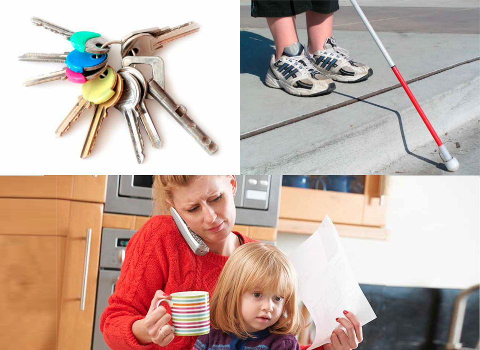
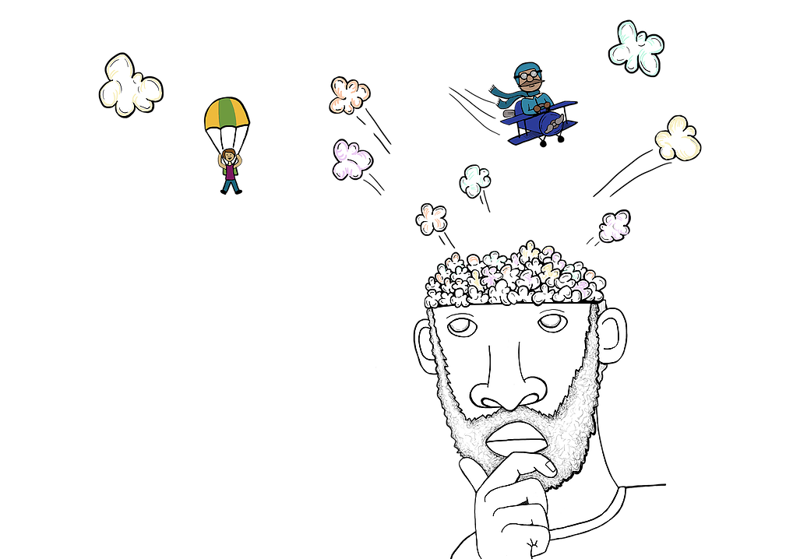
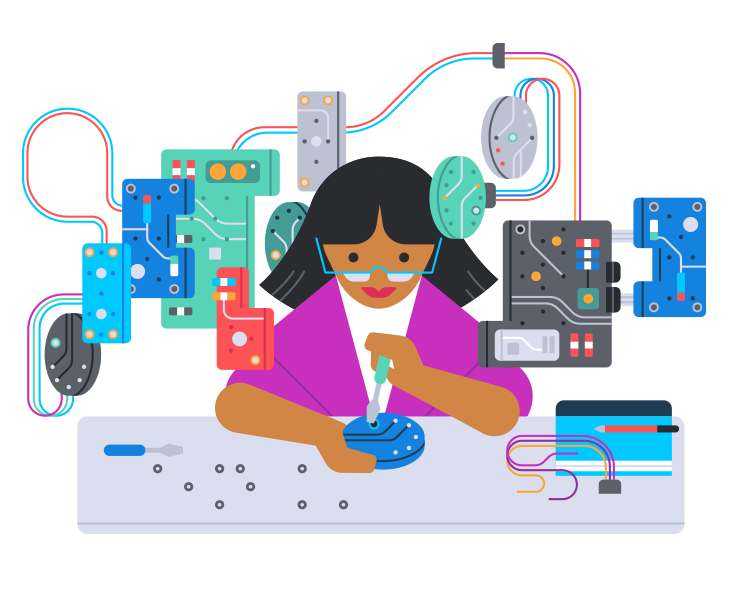
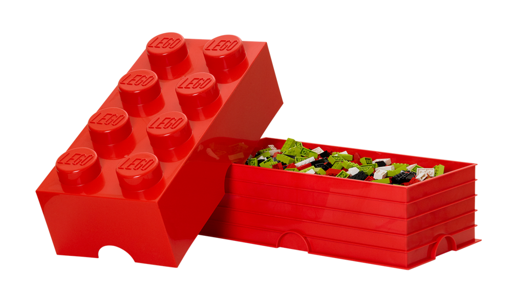

制作可穿戴设备
（Make-A-Wearable）
schedule45-90 分钟
stars中级（Intermed.）
face3-5 年级
一. 什么是可穿戴设备（What）

一. 什么是可穿戴设备（What）
- 【什么是可穿戴设备？】可直接穿戴在身上的电子设备。
- 【可穿戴设备的作用是什么？】监测心跳、监测运动量、手势控制、脑电波控制、快捷支付等。
- 【栗子】智能手表、智能眼镜、智能鞋、智能衣服等。
一. 场景（Connect）

随着科技的发展，手机使人们的生活越来越方便。使用手机聊天、购物、玩游戏、看电影、听音乐等等。但同时也带来了一些问题，我们来找找问题吧，并想办法解决问题，让人们的生活更美好！
二. 发现问题（Find a Problem）

大家一起讨论、发现问题、确定问题、并记录问题。
三. 头脑风暴（Brainstorm）

- 花 3 分钟时间，独自头脑风暴，尽可能多地产生解决问题的想法。
- 想法可以用笔画出来，想法可以用积木搭建出来。
- 小组内轮流分享想法，并选择最佳的、可用积木实现的想法。
- 每个小组的想法都是个性化的，不一样的。
- 分享你的想法、思考。
四. 选出最好的想法（Choose the Best Idea）

依据设计标准（Design Criteria），选出最好的想法。
五. 制作（Make）

- 使用积木实现你的想法。
- 在制作过程中，测试和分析你的想法，必要时可进行改进。
六. 评估（Evaluate）

- 依据设计标准，测试和评估模型。
七. 展示（Present）

- 向大家展示你的模型，分享你的想法、草图（Sketche）。
- 把模型放到展示台上，来张合影吧！
八. 整理（Tidy Up）

同学们今天非常棒，最后让我们拆解模型，把积木分类存放到收纳盒吧。